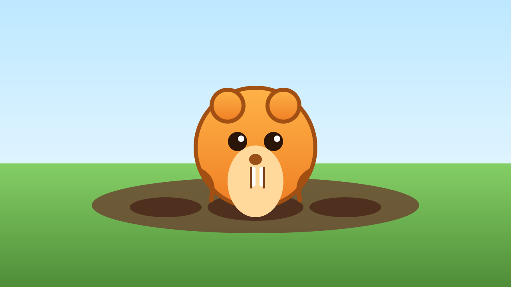
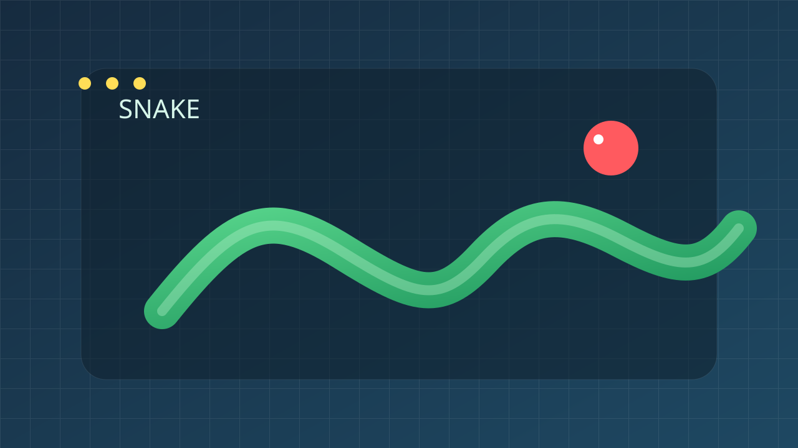
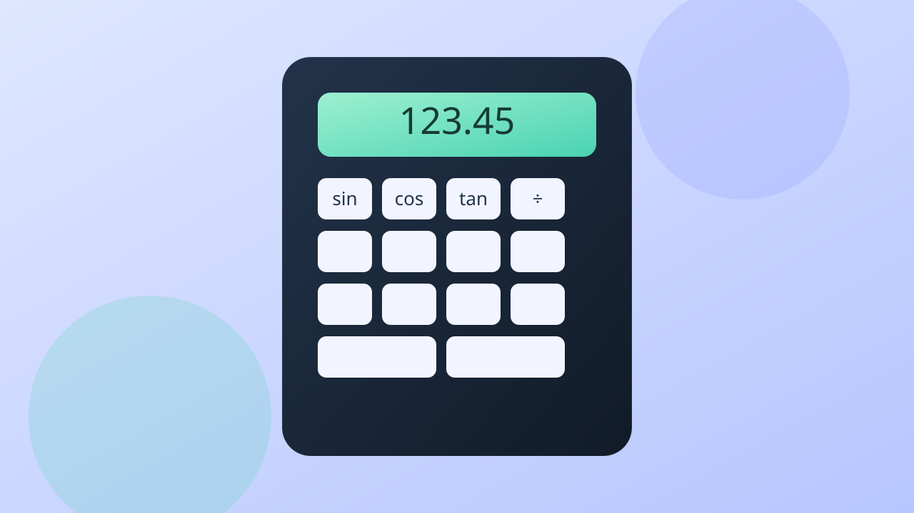
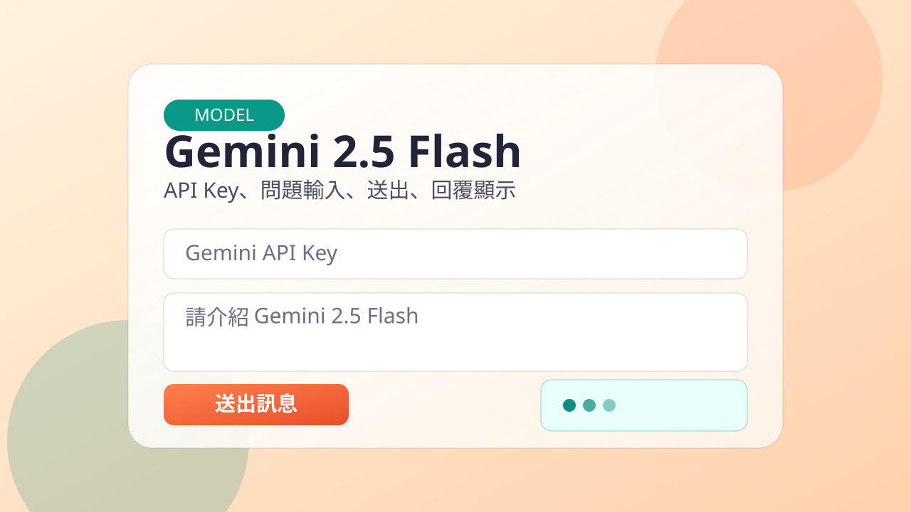
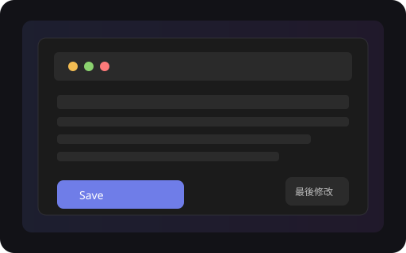
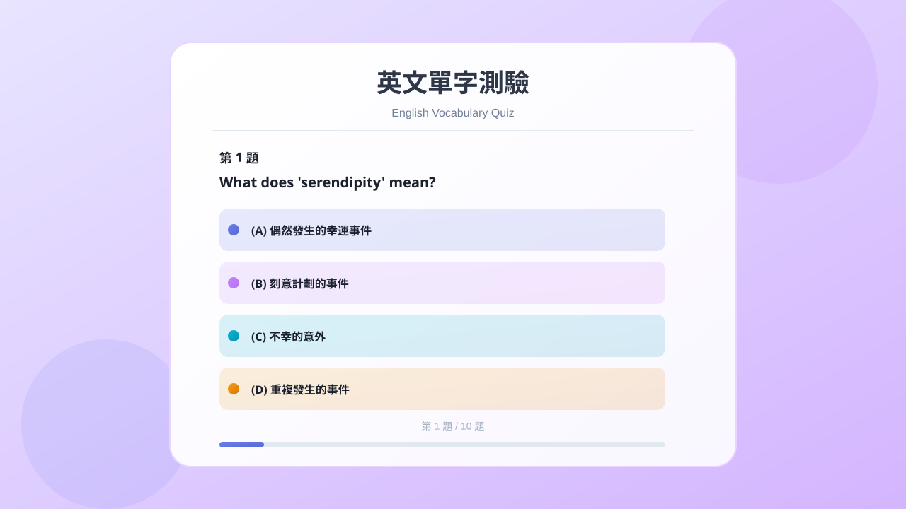

1. 打地鼠
反應力挑戰遊戲，看看你能在時間內打中幾隻地鼠。

遊戲說明
- 在限時內點擊冒出的地鼠，成功擊中即可得分。
- 地鼠出現位置與時間隨機，考驗反應速度與專注力。
- 適合短時間反覆挑戰，練習手眼協調。
PORTFOLIO
我喜歡把遊戲與互動功能做成網頁專案，持續練習前端開發與邏輯設計。 這裡收錄了我目前完成的六個作品。
反應力挑戰遊戲，看看你能在時間內打中幾隻地鼠。

經典街機玩法，控制蛇身吃食物並挑戰更高分數。

可計算基本四則運算，也支援常用工程函數。

可輸入 API Key 與問題，快速呼叫 Gemini 2.5 Flash 並顯示回覆。

使用標準 HTTPS 發送訊息，並透過 SSE 即時接收頻道內容。
單檔 Google Apps Script Web App，直接使用 DriveApp 在指定雲端資料夾讀寫記事檔案。

隨機抽取題目的線上英文單字測驗，支援從 Google Sheets 題庫讀取，並自動評分。
